21 Pseudotime analysis
library(TSCAN)
library(M3Drop)
library(monocle)
library(destiny)
library(SLICER)
set.seed(1)In many situations, one is studying a process where cells change continuously. This includes, for example, many differentiation processes taking place during development: following a stimulus, cells will change from one cell-type to another. Ideally, we would like to monitor the expression levels of an individual cell over time. Unfortunately, such monitoring is not possible with scRNA-seq since the cell is lysed (destroyed) when the RNA is extracted.
Instead, we must sample at multiple time-points and obtain snapshots of the gene expression profiles. Since some of the cells will proceed faster along the differentiation than others, each snapshot may contain cells at varying points along the developmental progression. We use statistical methods to order the cells along one or more trajectories which represent the underlying developmental trajectories, this ordering is referred to as “pseudotime”.
In this chapter we will consider four different tools: Monocle, TSCAN, destiny and SLICER for ordering cells according to their pseudotime development. To illustrate the methods we will be using a dataset on mouse embryonic development (Deng et al. 2014). The dataset consists of 268 cells from 10 different time-points of early mouse development. In this case, there is no need for pseudotime alignment since the cell labels provide information about the development trajectory. Thus, the labels allow us to establish a ground truth so that we can evaluate and compare the different methods.
A recent review by Cannoodt et al provides a detailed summary of the various computational methods for trajectory inference from single-cell transcriptomics (Cannoodt, Saelens, and Saeys 2016). They discuss several tools, but unfortunately for our purposes many of these tools do not have complete or well-maintained implementations, and/or are not implemented in R.
Cannoodt et al cover:
- SCUBA - Matlab implementation
- Wanderlust - Matlab (and requires registration to even download)
- Wishbone - Python
- SLICER - R, but package only available on Github
- SCOUP - C++ command line tool
- Waterfall - R, but one R script in supplement
- Mpath - R pkg, but available as tar.gz on Github; function documentation but no vignette/workflow
- Monocle - Bioconductor package
- TSCAN - Bioconductor package
Unfortunately only two tools discussed (Monocle and TSCAN) meet the gold standard of open-source software hosted in a reputable repository.
The following figures from the paper summarise some of the features of the various tools.

Figure 21.1: Descriptions of trajectory inference methods for single-cell transcriptomics data (Fig. 2 from Cannoodt et al, 2016).

Figure 21.2: Characterization of trajectory inference methods for single-cell transcriptomics data (Fig. 3 from Cannoodt et al, 2016).
21.1 TSCAN
TSCAN combines clustering with pseudotime analysis. First it clusters the cells using mclust, which is based on a mixture of normal distributions. Then it builds a minimum spanning tree to connect the clusters. The branch of this tree that connects the largest number of clusters is the main branch which is used to determine pseudotime.
First we will try to use all genes to order the cells.
deng <- readRDS("deng/deng.rds")
cellLabels <- colnames(deng)
procdeng <- TSCAN::preprocess(deng)
colnames(procdeng) <- 1:ncol(deng)
dengclust <- TSCAN::exprmclust(procdeng, clusternum = 10)
TSCAN::plotmclust(dengclust)
dengorderTSCAN <- TSCAN::TSCANorder(dengclust, orderonly = F)
pseudotime_order_tscan <- as.character(dengorderTSCAN$sample_name)We can also examine which timepoints have been assigned to each state:
cellLabels[dengclust$clusterid == 10]## [1] "late2cell" "late2cell" "late2cell" "late2cell" "late2cell"
## [6] "late2cell" "late2cell" "late2cell" "late2cell" "late2cell"
## [11] "mid2cell" "mid2cell" "mid2cell" "mid2cell" "mid2cell"
## [16] "mid2cell" "mid2cell" "mid2cell" "mid2cell" "mid2cell"
## [21] "mid2cell" "mid2cell"colours <- rainbow(n = 10) # red = early, violet = late
tmp <-
factor(
cellLabels[as.numeric(pseudotime_order_tscan)],
levels = c("early2cell", "mid2cell", "late2cell", "4cell", "8cell",
"16cell", "earlyblast", "midblast", "lateblast")
)
plot(
as.numeric(tmp),
xlab = "Pseudotime Order",
ylab = "Timepoint",
col = colours[tmp],
pch = 16
)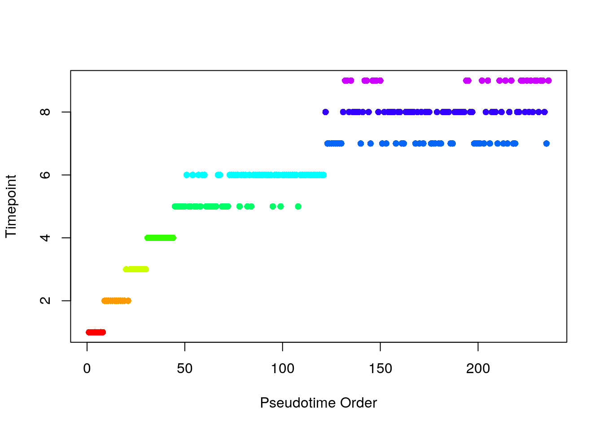
Exercise 1 Compare results for different numbers of clusters (clusternum).
21.2 monocle
Monocle skips the clustering stage of TSCAN and directly builds a minimum spanning tree on a reduced dimension representation of the cells to connect all cells. Monocle then identifies the longest path in this tree to determine pseudotime. If the data contains diverging trajectories (i.e. one cell type differentiates into two different cell-types), monocle can identify these. Each of the resulting forked paths is defined as a separate cell state.
Unfortunately, Monocle does not work when all the genes are used, so we must carry out feature selection. First, we use M3Drop:
m3dGenes <- as.character(
M3Drop::M3DropDifferentialExpression(deng)$Gene
)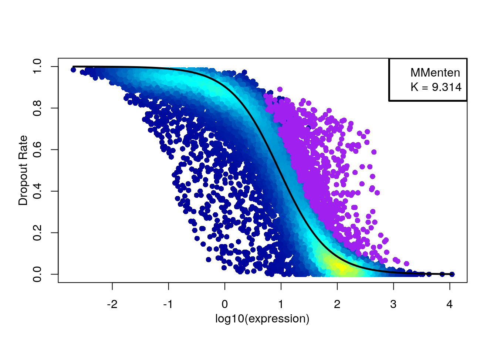
d <- deng[which(rownames(deng) %in% m3dGenes), ]
d <- d[!duplicated(rownames(d)), ]Now run monocle:
colnames(d) <- 1:ncol(d)
geneNames <- rownames(d)
rownames(d) <- 1:nrow(d)
pd <- data.frame(timepoint = cellLabels)
pd <- new("AnnotatedDataFrame", data=pd)
fd <- data.frame(gene_short_name = geneNames)
fd <- new("AnnotatedDataFrame", data=fd)
dCellData <- newCellDataSet(d, phenoData = pd, featureData = fd, expressionFamily = tobit())
dCellData <- setOrderingFilter(dCellData, which(geneNames %in% m3dGenes))
dCellData <- estimateSizeFactors(dCellData)
dCellDataSet <- reduceDimension(dCellData, pseudo_expr = 1)
dCellDataSet <- orderCells(dCellDataSet, reverse = TRUE)
plot_cell_trajectory(dCellDataSet)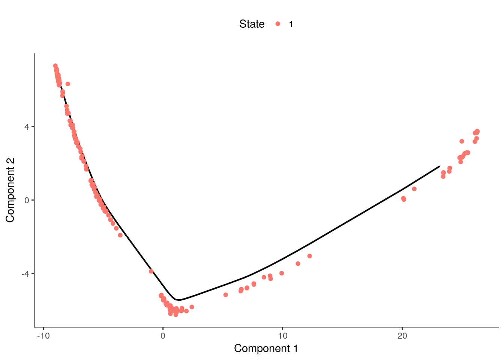
# Store the ordering
pseudotime_monocle <-
data.frame(
Timepoint = phenoData(dCellDataSet)$timepoint,
pseudotime = phenoData(dCellDataSet)$Pseudotime,
State=phenoData(dCellDataSet)$State
)
rownames(pseudotime_monocle) <- 1:ncol(d)
pseudotime_order_monocle <-
rownames(pseudotime_monocle[order(pseudotime_monocle$pseudotime), ])We can again compare the inferred pseudotime to the known sampling timepoints.
monocle_time_point <- factor(
pseudotime_monocle$Timepoint,
levels = c("early2cell", "mid2cell", "late2cell", "4cell", "8cell",
"16cell", "earlyblast", "midblast", "lateblast")
)
plot(
pseudotime_monocle$pseudotime,
monocle_time_point,
xlab = "Pseudotime",
ylab = "Timepoint",
col = colours[monocle_time_point],
pch = 16
)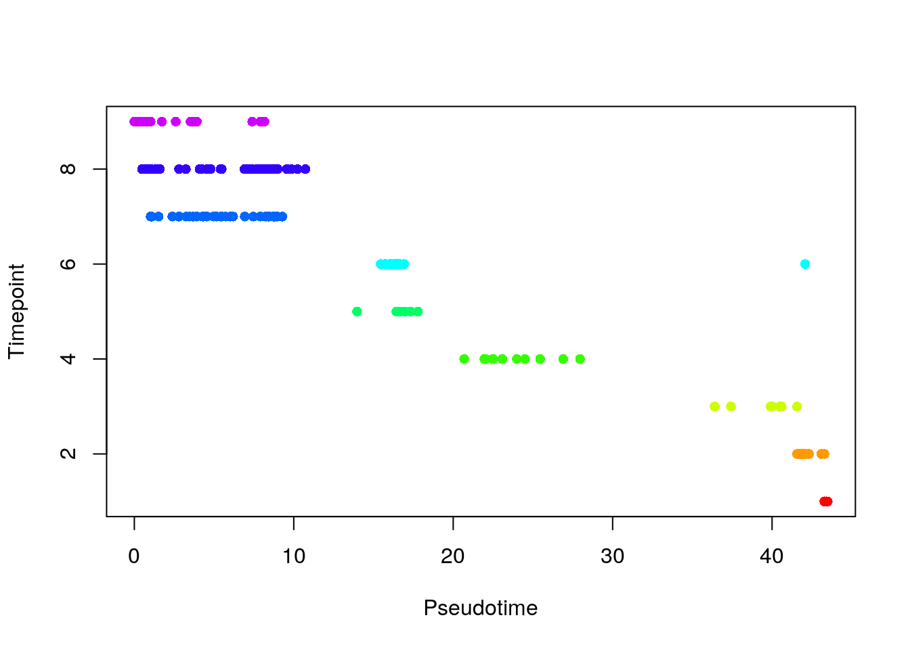
21.3 Diffusion maps
Diffusion maps were introduced by Ronald Coifman and Stephane Lafon, and the underlying idea is to assume that the data are samples from a diffusion process. The method infers the low-dimensional manifold by estimating the eigenvalues and eigenvectors for the diffusion operator related to the data.
Haghverdi et al have applied the diffusion maps concept to the analysis of single-cell RNA-seq data to create an R package called destiny.
dm <- DiffusionMap(t(log2(deng + 1)))
tmp <- factor(
colnames(deng),
levels = c(
"early2cell",
"mid2cell",
"late2cell",
"4cell",
"8cell",
"16cell",
"earlyblast",
"midblast",
"lateblast"
)
)
plot(
eigenvectors(dm)[,1],
eigenvectors(dm)[,2],
xlab = "Diffusion component 1",
ylab = "Diffusion component 2",
col = colours[tmp],
pch = 16
)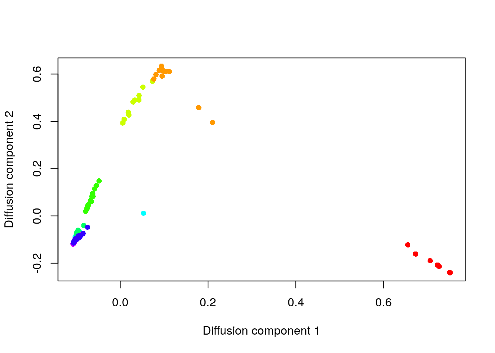
Like the other methods, destiny does a good job at ordering the early time-points, but it is unable to distinguish the later ones.
Exercise 2 Do you get a better resolution between the later time points by considering additional eigenvectors?
Exercise 3 How does the ordering change if you only use the genes identified by M3Drop?
21.4 SLICER
The SLICER method is an algorithm for constructing trajectories that describe gene expression changes during a sequential biological process, just as Monocle and TSCAN are. SLICER is designed to capture highly nonlinear gene expression changes, automatically select genes related to the process, and detect multiple branch and loop features in the trajectory (Welch, Hartemink, and Prins 2016). The SLICER R package is available from its GitHub repository and can be installed from there using the devtools package.
We use the select_genes function in SLICER to automatically select the genes to use in builing the cell trajectory. The function uses “neighbourhood variance” to identify genes that vary smoothly, rather than fluctuating randomly, across the set of cells. Following this, we determine which value of “k” (number of nearest neighbours) yields an embedding that most resembles a trajectory. Then we estimate the locally linear embedding of the cells.
slicer_genes <- select_genes(t(deng))
k <- select_k(t(deng[slicer_genes,]), kmin = 30, kmax=60)## finding neighbours
## calculating weights
## computing coordinates
## finding neighbours
## calculating weights
## computing coordinates
## finding neighbours
## calculating weights
## computing coordinates
## finding neighbours
## calculating weights
## computing coordinates
## finding neighbours
## calculating weights
## computing coordinates
## finding neighbours
## calculating weights
## computing coordinates
## finding neighbours
## calculating weights
## computing coordinatesslicer_traj_lle <- lle(t(deng[slicer_genes,]), m = 2, k)$Y## finding neighbours
## calculating weights
## computing coordinatesplot(slicer_traj_lle, xlab = "LLE Comp 1", ylab = "LLE Comp 2",
main = "Locally linear embedding of cells from SLICER",
col=colours[tmp], pch=16)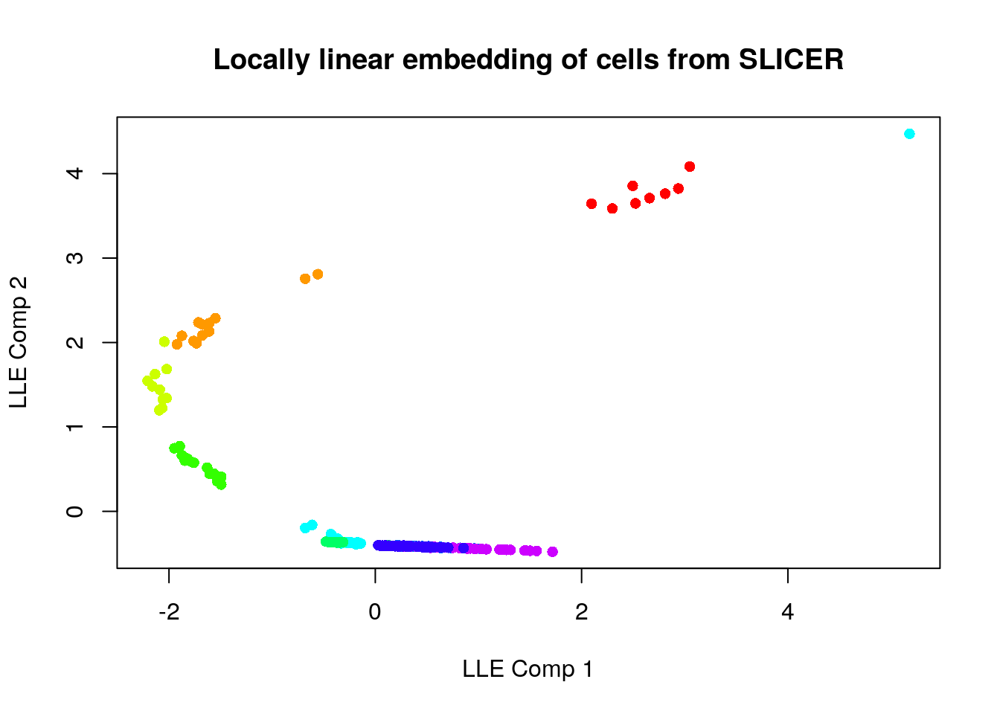
With the locally linear embedding computed we can construct a k-nearest neighbour graph that is fully connected. This plot displays a (yellow) circle for each cell, with the cell ID number overlaid in blue. Here we show the graph computed using 10 nearest neighbours. Here, SLICER appears to detect one major trajectory with one branch.
slicer_traj_graph <- conn_knn_graph(slicer_traj_lle, 10)
plot(slicer_traj_graph, main = "Fully connected kNN graph from SLICER")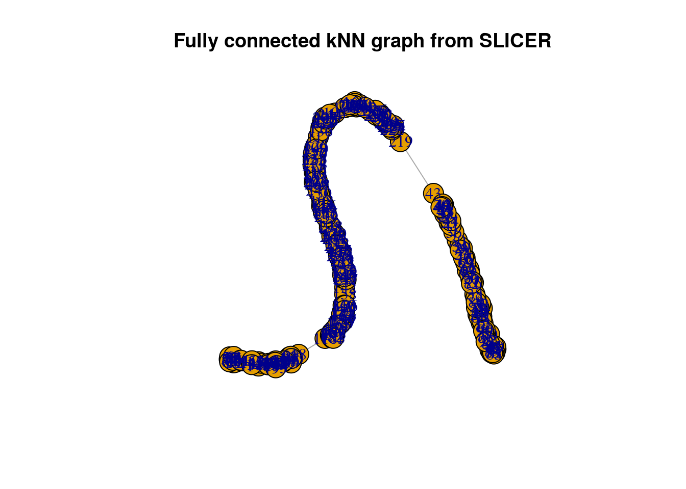
From this graph we can identify “extreme” cells that are candidates for start/end cells in the trajectory.
ends <- find_extreme_cells(slicer_traj_graph, slicer_traj_lle)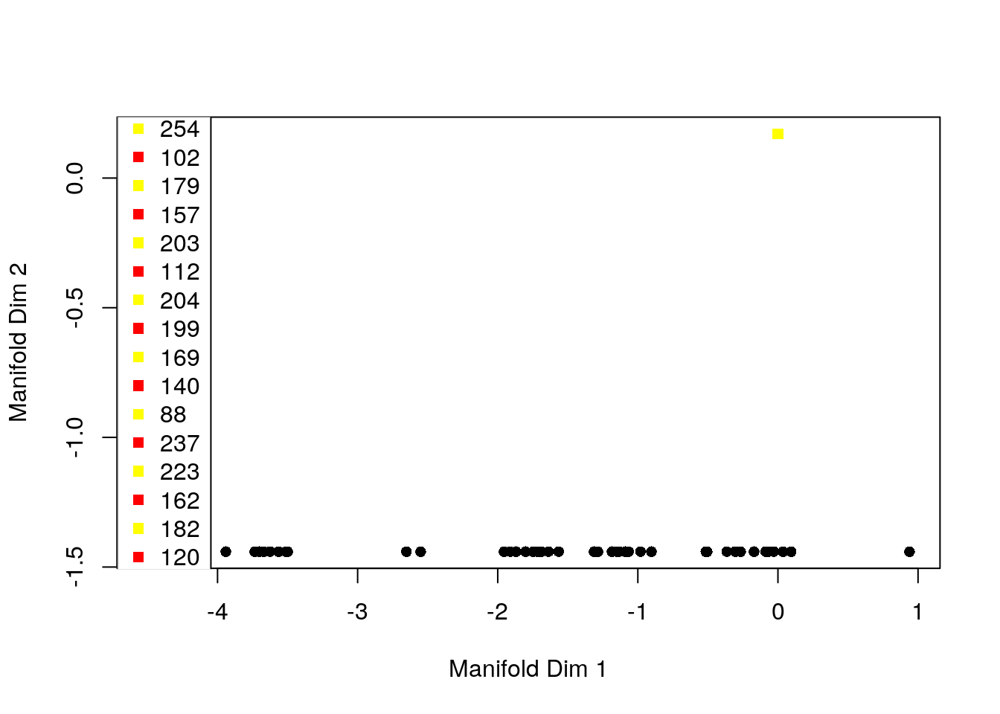
start <- ends[1]Having defined a start cell we can order the cells in the estimated pseudotime.
pseudotime_order_slicer <- cell_order(slicer_traj_graph, start)
branches <- assign_branches(slicer_traj_graph, start)
pseudotime_slicer <-
data.frame(
Timepoint = cellLabels,
pseudotime = NA,
State = branches
)
pseudotime_slicer$pseudotime[pseudotime_order_slicer] <-
1:length(pseudotime_order_slicer)We can again compare the inferred pseudotime to the known sampling timepoints. SLICER does not provide a pseudotime value per se, just an ordering of cells.
slicer_time_point <- factor(
pseudotime_slicer$Timepoint,
levels = c("early2cell", "mid2cell", "late2cell", "4cell", "8cell",
"16cell", "earlyblast", "midblast", "lateblast")
)
plot(
pseudotime_slicer$pseudotime,
slicer_time_point,
xlab = "Pseudotime",
ylab = "Timepoint",
col = colours[slicer_time_point],
pch = 16
)
Like the previous method, SLICER here provides a good ordering for the early time points and struggles for later time points.
Exercise 4 How do the results change for different k? (e.g. k = 5) What about changing the number of nearest neighbours in the call to conn_knn_graph?
Exercise 5 How does the ordering change if you use a different set of genes from those chosen by SLICER (e.g. the genes identified by M3Drop)?
21.5 Comparison of the methods
How do the trajectories inferred by TSCAN and Monocle compare?
matched_ordering <-
match(
pseudotime_order_tscan,
pseudotime_order_monocle
)
timepoint_ordered <-
monocle_time_point[order(pseudotime_monocle$pseudotime)]
plot(
matched_ordering,
xlab = "Monocle Order",
ylab = "TSCAN Order",
col = colours[timepoint_ordered],
pch = 16
)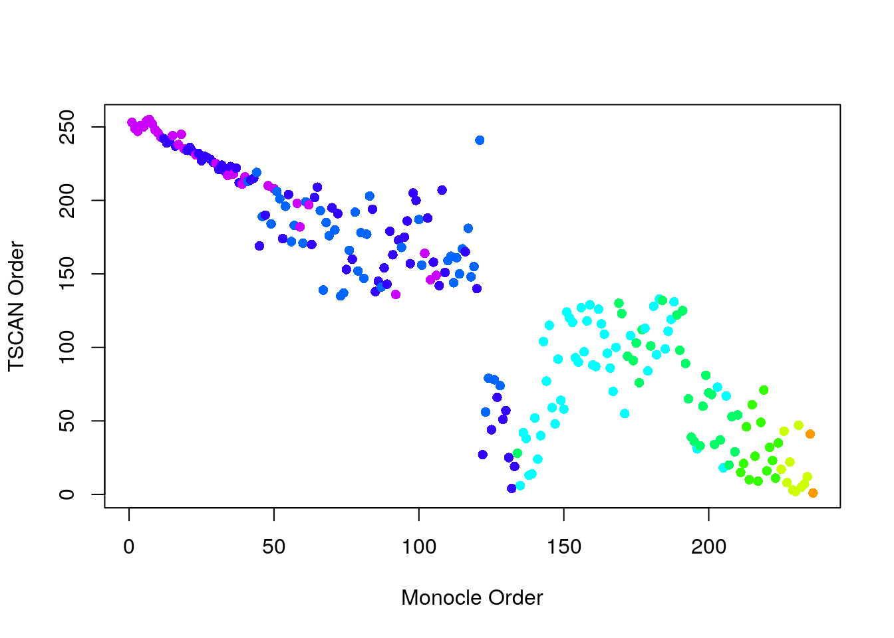
Exercise 6: Compare destiny and SLICER to TSCAN and Monocle.
21.6 Expression of genes through time
Each package also enables the visualization of expression through pseudotime. Following individual genes is very helpful for identifying genes that play an important role in the differentiation process. We illustrate the procedure using the Obox6 gene which is known to be important during early development.
TSCAN
colnames(deng) <- 1:ncol(deng)
TSCAN::singlegeneplot(
deng[rownames(deng) == "Obox6", ],
dengorderTSCAN
)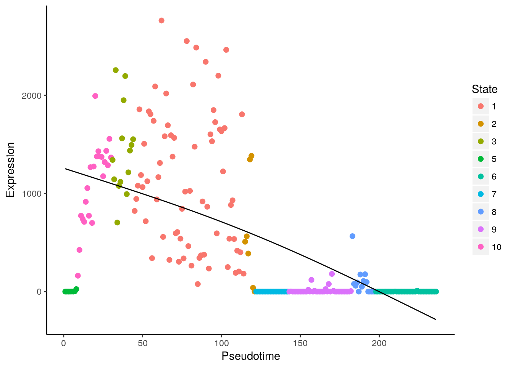
Monocle
monocle::plot_genes_in_pseudotime(
dCellDataSet[fData(dCellDataSet)$gene == "Obox6",],
color_by = "timepoint"
)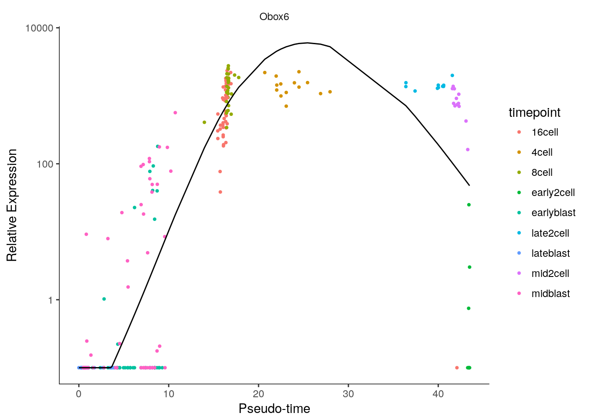
Of course, pseudotime values computed with any method can be added to the pData slot of an SCESet object. Having done that, the full plotting capabilities of the scater package can be used to investigate relationships between gene expression, cell populations and pseudotime. This would be particularly useful for the SLICER results, as SLICER does not provide plotting functions.
Exercise 7: Repeat the exercise using a subset of the genes, e.g. the set of highly variable genes that can be obtained using M3Drop::Brennecke_getVariableGenes
References
Deng, Qiaolin, Daniel Ramsköld, Björn Reinius, and Rickard Sandberg. 2014. “Single-Cell RNA-seq Reveals Dynamic, Random Monoallelic Gene Expression in Mammalian Cells.” Science 343 (6167): 193–96.
Cannoodt, Robrecht, Wouter Saelens, and Yvan Saeys. 2016. “Computational methods for trajectory inference from single-cell transcriptomics.” European Journal of Immunology 46 (11): 2496–2506. doi:10.1002/eji.201646347.
Welch, Joshua D, Alexander J Hartemink, and Jan F Prins. 2016. “SLICER: inferring branched, nonlinear cellular trajectories from single cell RNA-seq data.” Genome Biology 17 (1): 106. doi:10.1186/s13059-016-0975-3.